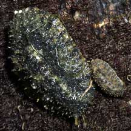
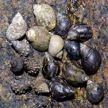
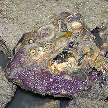
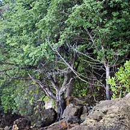

|
|
| index of concepts |
| ecosystems | rocky | sandy | seagrass | coral rubble | coral reef |
| Rocky
shore ecosystem updated Dec 2019
A shore with lots of boulders, rocks and stones is called a rocky shore (surprise!). Such shores are often found at the base of natural cliffs which are cloaked in a coastal forest. The rocky shore is a result of the natural, gradual erosion of such cliffs. At the low water mark, a rocky shore may gradually merge with a coral rubble area. Even artificial surfaces such as seawalls, jetty legs and large trash on the shore provide hard surfaces for dwellers adapted to a rocky shore. While the rocks may appear barren, they are usually full of life! Take a closer look! Home on the Rock: Rocks provide a firm surface, a scarce commodity in the sea. Coastal forests and other landward ecosystems produce nutrients that flow onto the rocky shore. But rock dwellers, especially those living at or near the high water mark, have to cope with being baked in the sun at low tide, while waves may pound on them at high tide. When it rains, they have to cope with sudden changes in salinity. Where are the animals? At low tide during daylight, most rock dwellers are inactive. Some seal themselves up in their shells. Others hide in cool wet crevices, under stones or are buried in the sand nearby. At night or on a cool, overcast day, you might see some of the more active snails, slugs, crabs and sea slaters out and about. But they are often well camouflaged. Although a rock may appear to be barren, often it is coated in a thin layer of tiny seaweeds or a film of microscopic plants. Grazing on this meadow are tiny animals, as well as large ones such as onch slugs, limpets, periwinkles.These are preyed upon by small predators. Closer to the low water mark where it is wetter, large seaweeds can grow more abundantly, on stones and rocks which provide good hard surfaces to cling to. Here, larger grazers and their predators may be found. |
 Various animals settle on large boulders at Punggol Beach. |
| Zones of life: Zonation is particularly obvious on large boulders and on the rocky shore near
the high water mark. As each kind of plant or animal settles and thrives
in a spot it is best adapted to, distinct zones on a rock often develop
in response to tidal and other influences. Watch your step! Many rock-dwellers are well camouflaged. Onch slugs often perfectly match the rock surface. Tiny banded bead anemones may coat the rock surface or the sand at the base of a boulder. Don't pick snails off the rock!Many snails glue their shells to the rock then retract completely into their shells at low tide. If you pick off the snail from the rock, you can't 'stick' them back onto the rock. When the tide comes in, the snails may be washed away and die. Pool party: Sometimes, a pool of water may be trapped in a large boulder or arrangement of rocks. Such a rock pool is precious shelter for a wider range of animals during low tide. |
 Onch slugs are commonly seenon our rocky shores but are very well camouflaged. Watch your step! |
 Various periwinkles can be seen on rocks. Do not pick them off! |
 The underside of a stone may be full of life! Be sure to turn the stone gently back after having a look at the underside. |
| Life on the Dark Side: Under a
stone it is safe, cool and wet. Here you might find encrusting animals
stuck to the stone. Such as sponges and keelworms. As
well as more mobile animals such as snails and porcelain
crabs. Larger crabs, shrimps and even some fishes may hide under
stones. On the upper side, large seaweeds and immobile lifeforms that
need sunlight may grow. Please be gentle when looking under a stone. Be sure to put it back exactly the way you found it so that animals and plants are not harmed. Don't crush animals as you turn the stone over. Rocky nursery: Hard surfaces are a great place to lay eggs on! The distinctive egg capsules of snails such as the Spiral melongena, Drills and Nerites are commonly seen. Please don't pry open oysters or barnacles. You will hurt and kill them. Don't climb rocks! The rocks are slippery with algae and covered with razor sharp barnacles that can give a nasty cut. |
|
 The rare Nyireh (Xylocarpus rumphii) is generally only found on our natural rocky shores. |
| Where can we explore rocky shores in Singapore? Labrador has the last large mainland rocky shore. There are also narrow and
patchy rocky shores at Changi. Among our northern islands, there are
rocky shores on Pulau
Ubin, the most famous being the one at Chek
Jawa. While on our Southern islands, there are rocky shores at Sentosa, St. John's Island, Sisters
Islands. Smaller patches of rocky shores are also found at Pulau
Semakau which is better known for its seagrass meadows and reef
flats. Are artificial granite sea walls rocky shores? While some rocky shore animals can live on artificial sea walls, there is a greater diversity of plants and animals on a natural rocky shore. In some sandy areas, a hard surface may become a miniature rocky shore. These include jetty pilings, abandoned tyres and oil drums and scattered rocks or stones. |
| Photos of rocky shores on Singapore shores |
| On wildsingapore
flickr for free download. |
Links
References
|